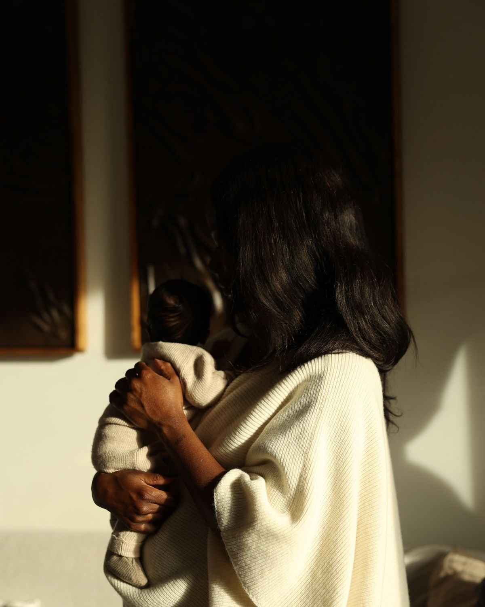
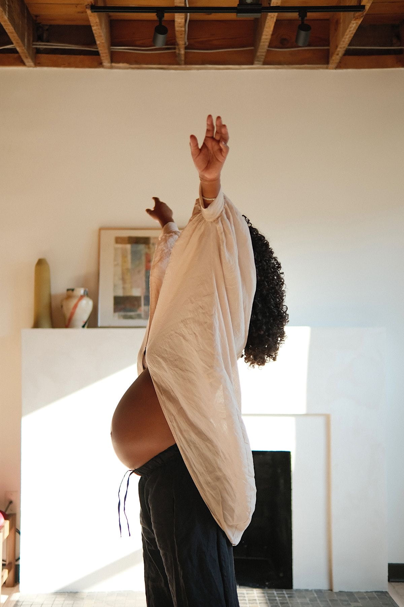
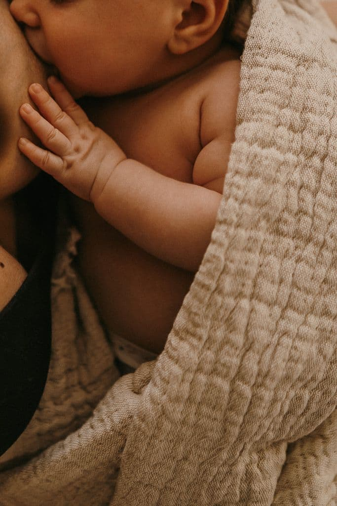
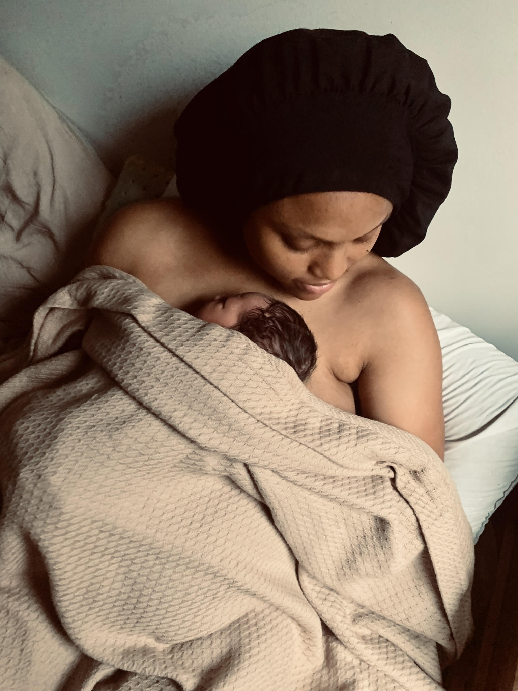
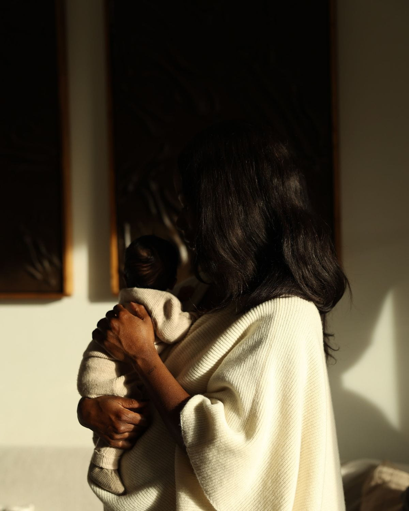
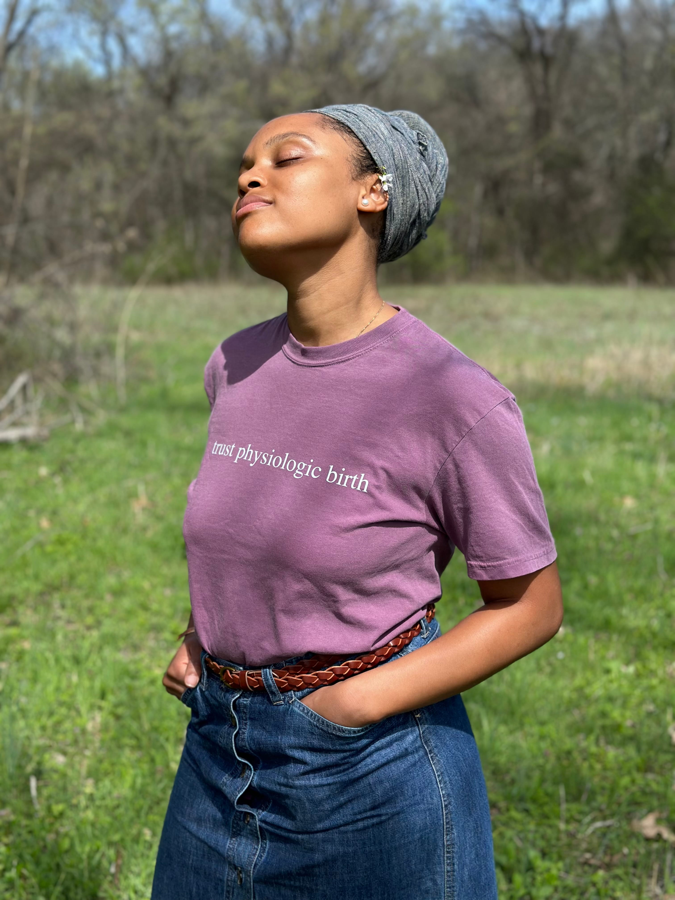

01
View DetailsBirth Support
In-person support for intentional homebirth, birth center, and hospital births across Middle Tennessee.
For women who don’t want to feel rushed, dismissed, or disconnected from their experience.
Holistic, faith-rooted support for pregnancy, birth, and postpartum.
Serving Lebanon, Mt. Juliet, Nashville & Middle Tennessee
Virtual support available
The Amana Way
Care for the whole woman, from birth and beyond.
The standard model of maternity care is fast, protocol-driven, and designed to manage outcomes, not to honor women. AMANA exists because something different is possible.
This is care that begins with your story. Your values, your questions, your body, your faith, your family. Support that does not require you to shrink yourself or fight for basic respect. For the woman who already knows there is another way, this is where that begins.
It is also care that honors the mother-baby relationship as sacred. Not two separate patients to be managed on parallel tracks, but one relationship, deserving of protection, attention, and deep respect from the very beginning.
Evidence-aware. Holistic. Faith-rooted. Calm without being passive.

“She will support you in the ways you need most that you didn’t even know you needed.”
Crystal C.C-SectionThree ways to be supported through pregnancy, birth, and postpartum.
In-person support for intentional homebirth, birth center, and hospital births across Middle Tennessee.
In-home support for recovery, nourishment, rest, and integration after birth.
Holistic guidance for first-time mothers and mothers choosing a different path this time.

Birth Support
This is for the mother who knows she wants more than a birth plan. You want preparation that helps you understand your body, make informed choices, involve your partner, and protect the emotional and spiritual tone of your birth.
For the mother walking into a hospital room with values her provider may not share, this is preparation that helps you stay grounded in your own authority, and someone who knows how to navigate the room beside you.
Support is available for homebirth, birth center, and hospital births across Middle Tennessee, with homebirth as the heart of this work.
Whether this is your first birth or you are returning after an experience that did not go the way you hoped, preparation that begins with your story, not a protocol.
Faithful Foundations Package · $2,000
Includes prenatal preparation, on-call labor support, and immediate postpartum care. A $500 deposit secures your due date. Payment plans available. Families booking birth and postpartum together receive a $100 continuity credit.
Personalized prenatal preparation for your birth setting
Physiologic birth education and labor rhythm support
Partner preparation so they feel steady and useful
Comfort measures, positioning, and nervous system support
Birth preferences support for informed, values-led decisions
Continuous in-person support through labor and early postpartum
“She takes her work seriously and is committed to making you feel comfortable and ready for the journey ahead.”Ayryka A. · Homebirth in Smith County

Postpartum Care
Postpartum is not a recovery period to push through. It is a time of celebration, protection, healing, and bonding. The first 40 days shape the next 40 years, and how a mother is held in that window matters deeply.
Modern society asks women to survive new motherhood in isolation. That is something that has never been done in human history, and it is showing. PMADs are rising because women were never meant to do this alone. They were meant to be held, fed, protected, and given full permission to receive. Amana postpartum support exists to restore what community has always provided.
This is for the mother who wants to be nourished, cared for, and held through the transition home, not left to figure everything out while depleted.
At Amana, postpartum care is not a service. It is a practice rooted in traditional wisdom that long predates the modern maternity model. Across cultures and across centuries, women have always known how to hold a new mother: warming foods made with intention, herbal and mineral baths that restore the body from the outside in, nourishing infusions for healing and for the kind of hair and skin care that tells a woman her beauty still matters in this season. Hands-on physical care. Prayer over your home and your family. Celebration, not just of the baby, but of the mother and the family she has become.
The lying-in period is not a trend. It is one of the oldest principles in human history, woven into Torah and confirmed by traditional cultures on every continent. The length is between you and your family. The principle is the same: you are not meant to perform your recovery. You are meant to receive.
Postpartum packages from $900 to $3,500
Choose from four packages based on the hours and duration of support you need, from 12 hours over 6 weeks to 48 hours through the full fourth trimester. A 25% deposit holds your care. Payment plans available.
In-home support
Rest and recovery care
Nourishing meal support
Emotional check-ins
Mother-baby rhythm support
Light household care


Virtual Support
You are planning a homebirth in a state I do not travel to. You are weighing your options and need someone who knows both sides of the conversation. You want to prepare intentionally but are not sure where to start.
Virtual support gives you access to the same midwifery knowledge, holistic perspective, and informed guidance as in-person clients, through sessions built around your specific situation.
Birth planning
Homebirth preparation
Faith-rooted encouragement
Postpartum planning
Informed newborn care decisions
Ongoing virtual check-ins
This may be for you if
01You have made decisions about your birth that your provider does not fully understand, and you are looking for someone who already does.
02You want to avoid unnecessary interventions and know how to navigate providers, policies, and protocols without feeling like you have to fight for everything.
03Your faith, your intuition, and your research are all pointing in the same direction. You need support that can hold all of that.
04You are not looking for passive support. You want someone who will stand beside you with clarity, advocacy, and the boldness to back you up.
Birth is not a problem to be solved. It is a threshold to be crossed with someone who knows the way.
This sounds like me. Let's talk.Who this is for
For the woman who has walked into a medical appointment and already felt the need to advocate twice as hard just to be heard. This is built for her.
Free Resource
If you are preparing for birth and you want something that covers your body, your mind, and your faith in one place, this is where to start. Ten grounded tips with scripture to meditate on and practical application for the season you are in. Free.
Download the Free Guide“She has given me all the tools and resources I need to do things differently this time, from a biblical and holistic perspective.”Ajali H. · VBAC, Homebirth in Indiana

Meet Rachel
I’m Rachel, a doula and student midwife, and the person in the room who already knows what you are navigating before you finish the sentence.
My path into this work began with my own mother, who was making choices about food, wellness, and birth long before any of it was popular. She birthed her last two children as VBACs with midwives and doulas. At the time I did not realize how unusual that was. What I saw was a woman who trusted her body and the One who designed it. That example shaped everything. My own journey through herbalism, through learning to listen to my body rather than suppress it, through carrying and birthing my daughter at home in Tennessee, has made me the support person I am. I have walked the path you may be considering. I will not project my choices onto you. I have lived the narrow path, made decisions most people around me did not understand, and found wisdom on the other side of both. That experience, alongside my training, is what I bring into this work.
I bring midwifery knowledge, herbal and holistic familiarity, peer lactation support, and healthcare insider understanding into every client relationship. What that means for you is a support person who can read the room, ask the right questions, and help you stay grounded in your own authority, whatever room you are in.
Doula
Midwifery Student
Peer Lactation Counselor
Holistic Birth + Postpartum
Why Amana
My training is rooted in traditional midwifery, outside of formal academic institutions and grounded in the lineage of women who have always known birth. That foundation means the questions I ask and the things I notice go beyond what most doulas are equipped to offer.
I have worked inside the hospital system. I understand how it moves, what it prioritizes, and where families feel the most pressure. That understanding is in your corner when you need it most.
I chose freebirth for my own daughter. I am not here to project that onto you, but I understand the weight of making a birth decision that does not have the approval of everyone around you. You will not be judged here.
I take one birth client and one postpartum client per month. This is not a volume practice. When you are my client, you have my full attention, not a fraction of it.
The word midwife translates to with women. That is what I try to bring to this work. Walking with you. Cooking for you. Making tea. Sitting with you. Support that feels like a dear friend who happens to know a great deal.
This is not homebirth by any means necessary. It is trauma-free birth by any means necessary. Hospital, birth center, or home. The setting is yours to choose. The standard is the same.
The Process
We talk through your pregnancy, your plans, and what support would actually serve you.
Together we build the support structure that fits your birth, your body, and your life.
We move into grounded, intentional support for the season ahead.
You don’t have to enter this season unsupported.
“She will support you in the ways you need most that you didn’t even know you needed. Full of wisdom and knowledge that will help you feel educated about your body, birth, and labor.”
Crystal C.C-Section“Working with Amana was transformative and affirming. She provided detailed information, always exercised patience, and consistently followed up with resource guides to help me feel organized and prepared.”
Jasmine W.Virtual Support“Her advice helped me navigate everything from pregnancy aches to learning how to trust my changing body. After birth, she was instrumental with breastfeeding, especially when I dealt with mastitis, always with holistic, evidence-based advice and so much patience.”
Sarah S.Pregnancy & PostpartumVerified reviews from real families.
Common Questions
This is not for the mother who wants to be told what to do. It is for the one who wants to understand why, choose deliberately, and feel held throughout.
Birth support begins at $2,000 and postpartum packages begin at $900. Payment plans are available for all services, which is one of the reasons reaching out early matters. The earlier you book, the more time you have to plan.
Your partner is part of this. I include them in education and preparation as much as possible, so they feel confident and ready rather than sidelined. The goal is for them to be your first line of support, and for me to support both of you. Many partners who started uncertain have become the biggest advocates for doula care after the experience.
It depends on where you are and what you need. Reach out and we will talk through it honestly. If I can serve you well, I will. If another practitioner would be a better fit for your timeline, I will tell you that too and connect you with someone I trust.
It is 30 minutes. No pressure, no pitch. We talk through your pregnancy, your plans, your questions, and whether my support would actually serve you. If we are a good fit, I walk you through next steps. If not, I will refer you to another vetted practitioner. The call is for both of us to decide.
Yes. Homebirth is the heart of this work, and I also support birth center and hospital births. Whatever setting you choose, the standard of care is the same.
In-person support covers Lebanon, Mt. Juliet, Nashville, and surrounding Middle Tennessee. Virtual support is available for families anywhere.
Built for the mother who knows she deserves more than the standard of care.
Stay Connected
Join the list for grounded guidance on birth, postpartum, and holistic maternal wellness. No noise. No pressure. Just wisdom for the season you are in.
If you have made it this far, something brought you here. Trust that. A connection call is 30 minutes, no pressure, and no obligation. Just a real conversation about what support could look like for you and your family.